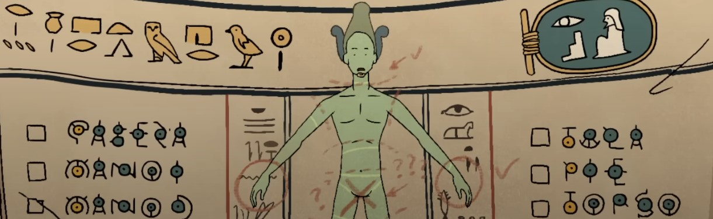
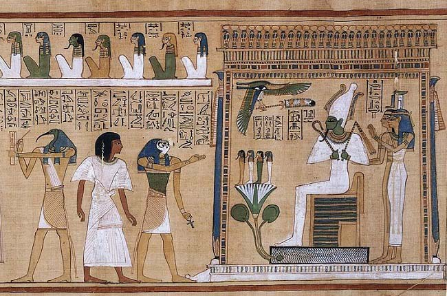

Osiris es el dios egipcio asociado con la vida después de la muerte,
la resurrección y la vegetación en el antiguo Egipto. Era considerado el gobernante del inframundo y juez de los muertos.
Mitos destacados:
Uno de los mitos más conocidos sobre Osiris es su asesinato por su hermano Seth,
quien lo desmembró y dispersó sus partes por todo Egipto. Su esposa, Isis, buscó y reunió sus restos,
devolviéndole la vida.
Pero había una parte que no se pudo encontrar, por lo que Osiris se sintió indigno de gobernar la tierra,
y decidió pasar a gobernar el mundo de los muertos.

Osiris también fue venerado por su papel como juez en el inframundo,
donde los corazones de los fallecidos eran pesados en una balanza contra la pluma de la verdad durante el juicio de Osiris.

Culto a Osiris
El culto a Osiris era prominente en la sociedad egipcia y estaba asociado con rituales funerarios
y la creencia en la vida después de la muerte. Sus festivales, como el Festival de la Heb Sed,
celebraban la renovación de la fuerza vital del faraón, identificado con Osiris.
Hermanos y descendencia de Osiris
La familia de Osiris es bastante compleja, formada por
su esposa y hermana Isis, sus hermanos Neftis, Seth y Horus el Mayor.
Isis
Seth
Neftis
Horus el Mayor
Y sus hijos: Horus el Menor con Isis y Anubis con Neftis.